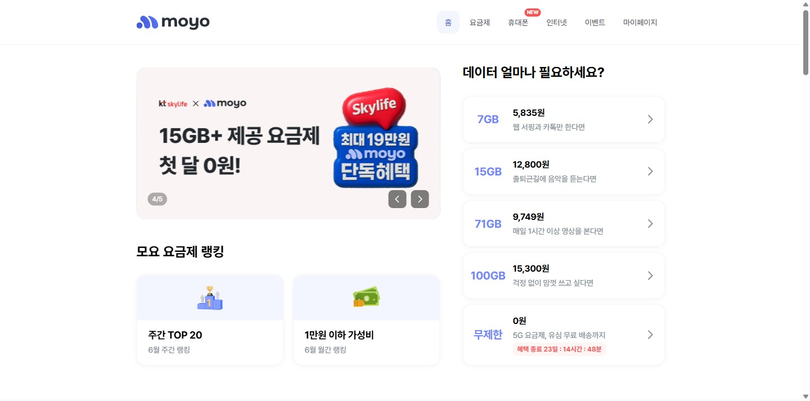

알뜰폰 비교 대표 플랫폼. 연 80만 개통·매출 100억·BEP 달성으로 PMF 검증 완료.
CPA 가입중개 중심 성장의 4대 병목(리텐션·외부의존·빅테크·MNO확장) 돌파.
CRM 락인 · 단독 PB 혜택 · 전문 커뮤니티/SEO · 로컬 역번들링.
고객 통신 여정 전체를 소유하는 '통신 데이터 플랫폼'으로 리포지셔닝.
빅테크가 통신을 금융의 부가기능으로 다룰 때, 모요는 '통신 전문성 × 가입 타이밍 데이터'라는 고유 무기로 승부한다.
알뜰폰 시장
모요 트랙션
출처: 이코노믹데일리·전자신문(시장) / 모요 채용·기업소개·블로터(트랙션). 일부 수치는 시점·자사 발표 기준.
탄탄한 중개 구조 위에, 최근 통신 3사(MNO)·인터넷·단말까지 잇는 '통신 슈퍼앱'으로 확장 중.
요금제는 매일 쓰는 서비스가 아님. 7~8개월·번호이동 때만 방문.
CAC > LTV — 재유입 비용 반복도매대가·정부 정책에 핵심 무기 '0원 요금제' 공급이 좌우됨.
도매대가 −52%·0원 수익성 잠식토스모바일·KB리브엠·카카오가 자체 MVNO+비교 내재화.
토스 19.2만 · KB 43.7만 가입통신 3사는 오프라인 '성지' 유통·단통법으로 온라인 표준화 난이도↑.
불투명 유통 = UX 흡수 난제핵심은 "한 번 가입시키고 끝"인 구조 → "고객 통신 여정을 계속 소유"하는 구조로 바꾸는 것.
가입일 데이터로 종료 1개월·1주 전 알림톡/푸시 시퀀스 자동화.
토스 신용점수처럼, 현재 요금제·데이터 사용량을 분석해 상시 점수·절약 가능액을 시각화.
이미 보유한 가입 타이밍 데이터로 당장 시작 가능 — 가장 빠른 Quick Win.
중소 MVNO와 협업해 단순 사은품이 아닌 리텐션을 높이는 구독 혜택을 결합.
결합 요금제
상시 적립
구독권 결합
정책 리스크를 모요만의 협상력·제휴 자산으로 흡수한다.
대기업 금융앱이 못 채우는 헤비유저 공간:
자본력 경쟁이 아니라 전문성·신뢰의 깊이로 이긴다.
당근마켓 로컬 타깃팅 벤치마킹 —
"투명한 비교"라는 모요의 본질을 MNO 시장으로 그대로 확장한다.
우선순위 원칙 — ① 추가 투자 없이 보유 자산으로 즉시 가능한 리텐션 CRM부터, 그 현금흐름으로 구조 전환·확장에 재투자.
| 전략 방향 | 핵심 측정 지표 (KPIs) | 의미 |
|---|---|---|
| 리텐션 강화 | 가입 6개월 후 재방문율 · DAU/MAU · 앱 삭제율 | 주기 파괴 여부 |
| CRM 고도화 | 알림톡·푸시 오픈율 · CRM 경유 요금제 전환율 | 데이터 마케팅 효율 |
| 트래픽 자생력 | SEO 오가닉 유입 비중 · 커뮤니티 일일 작성 글 수 | CAC 의존 탈피 |
| MNO 확장 | 성지 시세표 조회수 · 매장 방문예약/가입 폼 전환수 | 신시장 침투 |
선행지표는 재방문율·SEO 오가닉 비중 — '가입 건수'(후행)가 아니라 '관계의 깊이'를 본다.
목표 수치는 베이스라인 측정 후 확정. 본 슬라이드는 추적할 지표 체계 제안.
대기업 자본력에 맞서 모요의 무기는
'통신 전문성'과 '가입 타이밍 데이터'.
그 무기로 미션을 가속한다 — "모두에게 통신을 쉽고 정직하게."